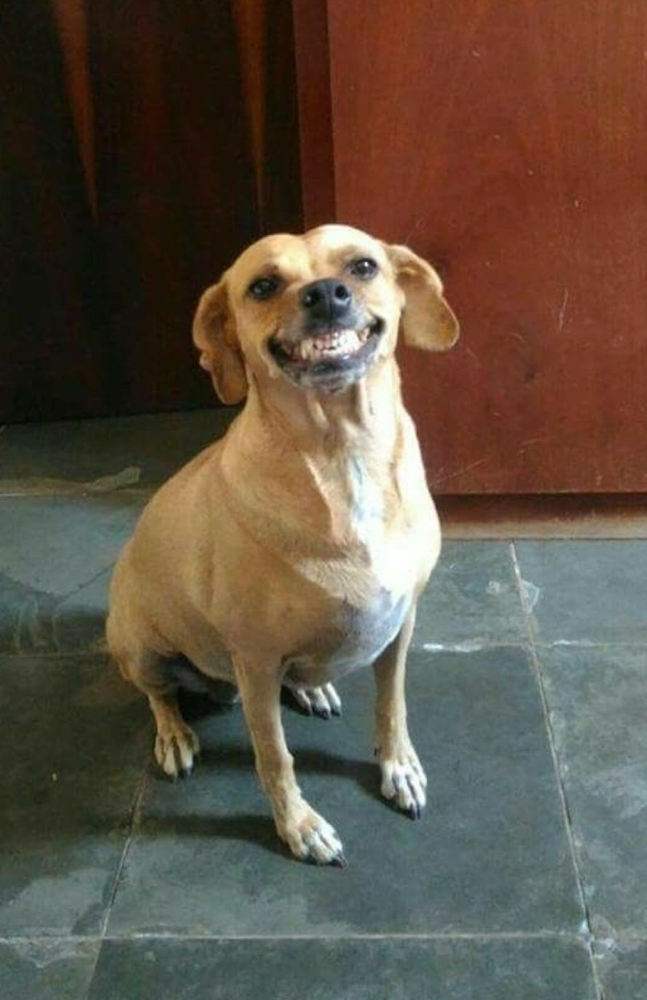
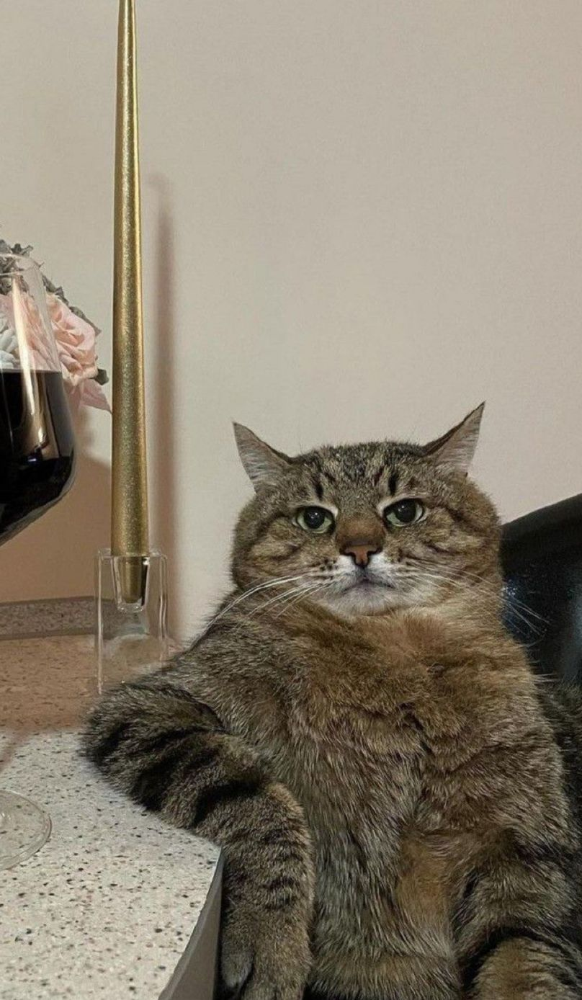

Thor - Encontrado em São Paulo

Nico - Encontrado no Rio de Janeiro

Tico e Tica - Encontrados em Curitiba

Penelope - Encontrada em Belo Horizonte
Lilica - Encontrada em Porto Alegre

Nala - Encontrada em Salvador